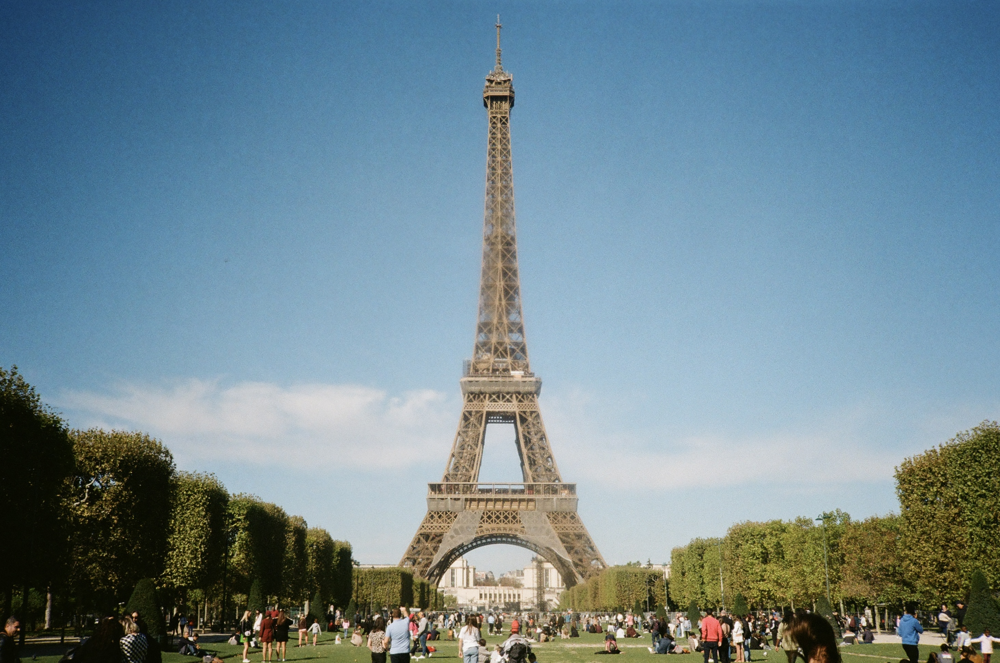
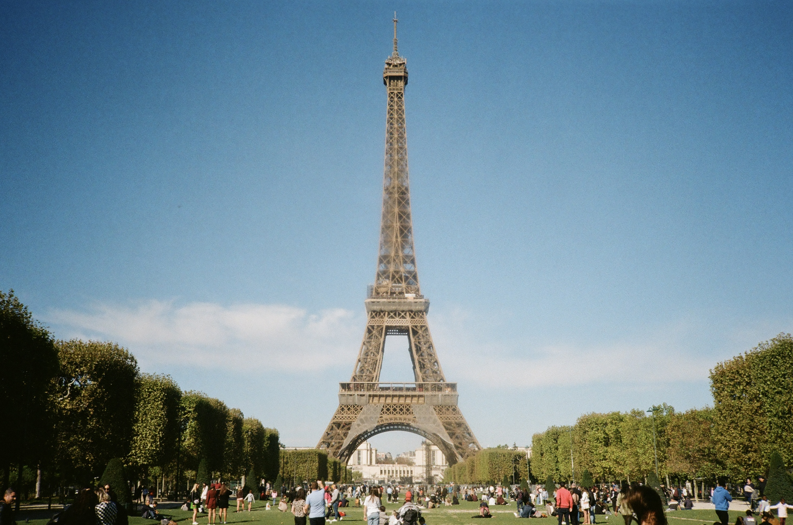
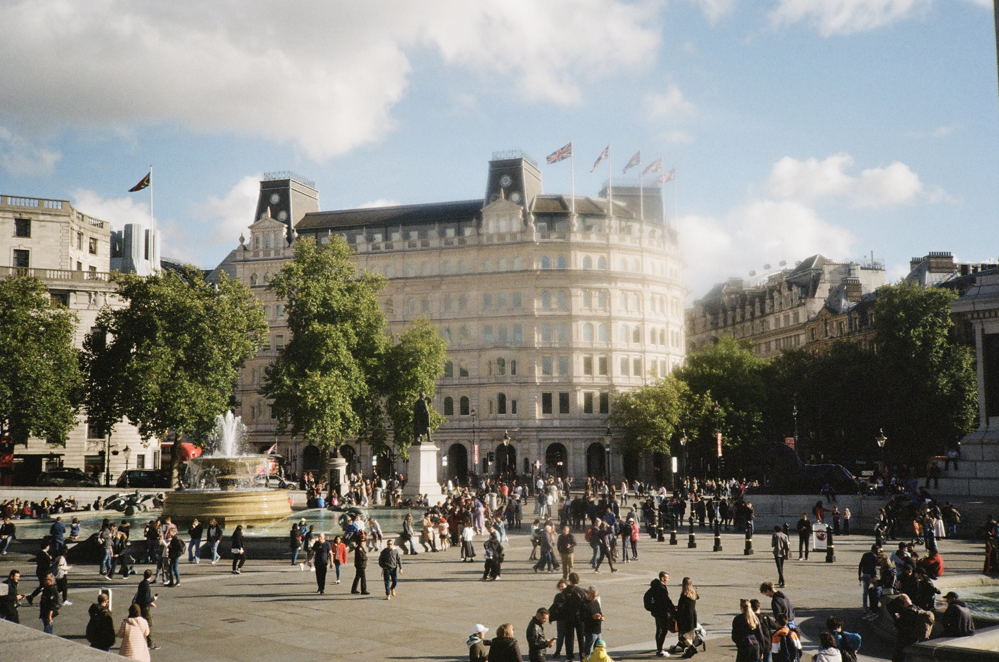
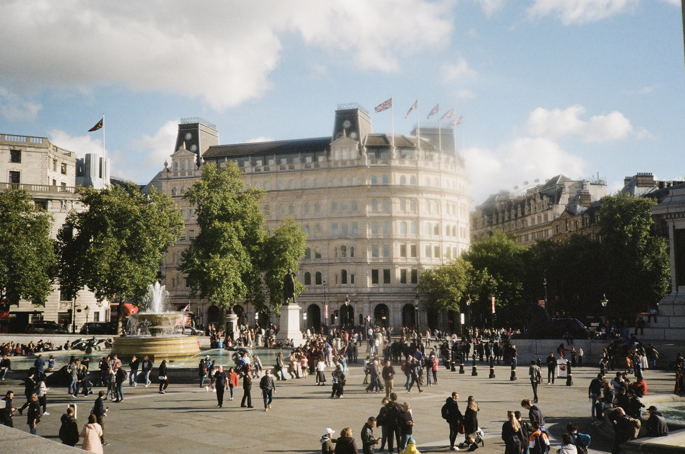
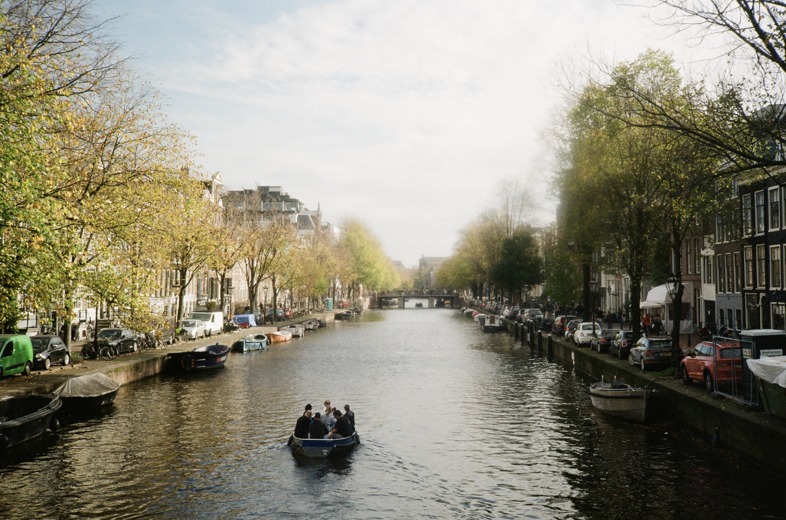
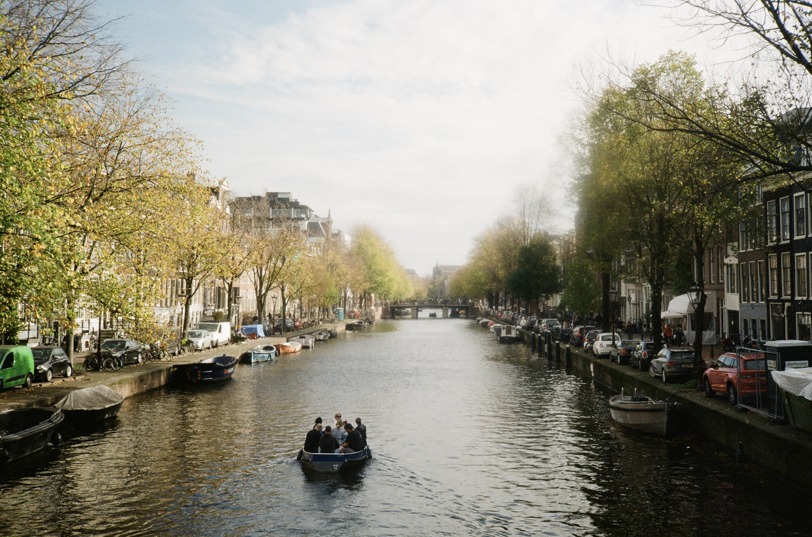
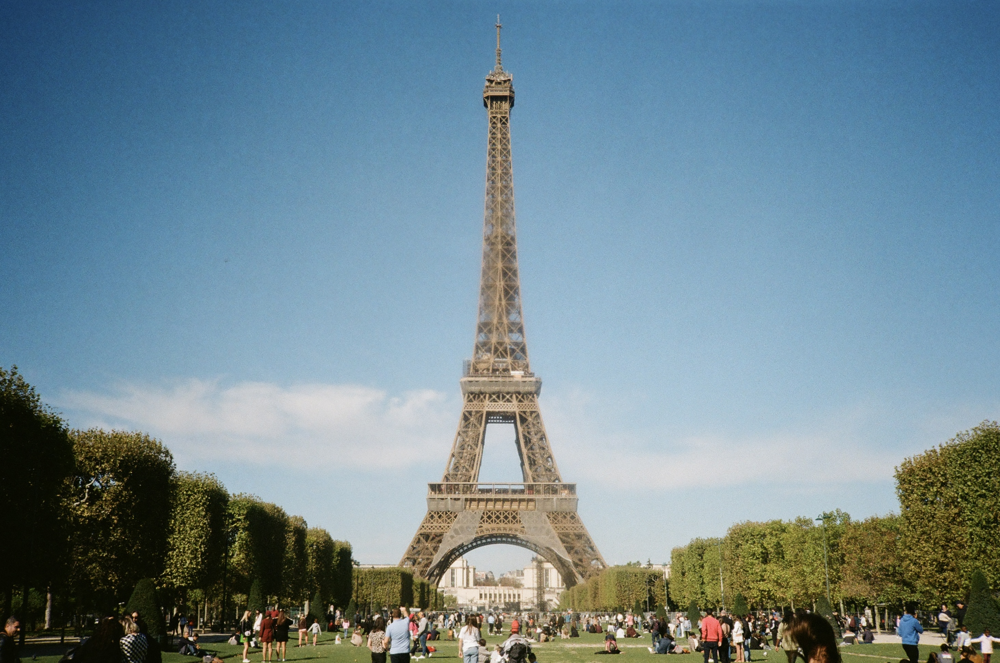
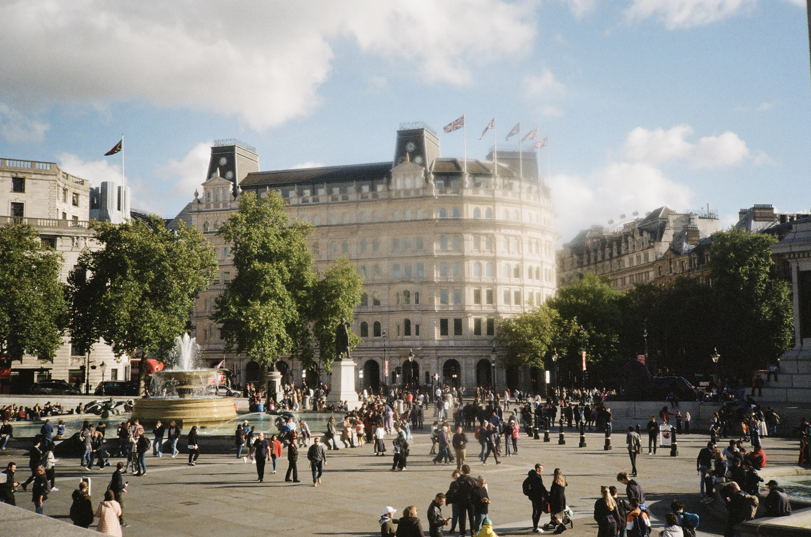
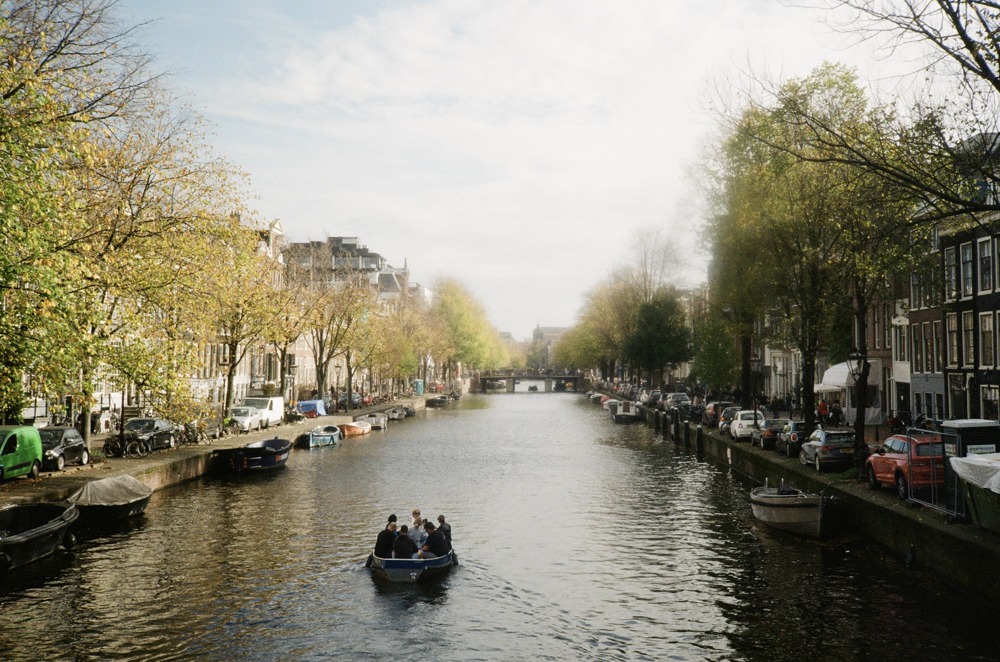

필름 사진
 


 



 

안녕하세요, 저는 끊임없이 새로운 도전을 통해 성장하는 것을 즐기는 포르예요. 안정적인 삶에서 벗어나 세 번의 큰 전환점을 겪으며 지금의 제가 되었어요. 어제보다 더 나은 오늘의 나를 만들기 위해 노력하고 있죠. 매일의 작은 성취들이 모여 제가 한 걸음 더 성장했다는 것을 느낄 때면 가슴이 벅차오르거든요. 그러다 문득, 저처럼 변화를 갈망하며 도전을 꿈꾸는 분들이 많다는 것을 알게 되었어요. 나의 성장도 의미 있지만, 누군가의 성장을 함께할 수 있다는 건 매일 새로운 설렘을 주는 일이에요.




I figure life's a gift and I don't intend on wasting it.
You don't know what hand you're gonna get dealt next.
You learn to take life as it comes at you... to make each day count.

사람들은 누구나 잊지 못하는 그 해가 있다고 해요
그 기억으로 모든 해를 살아갈 만큼 오래도록 소중한
그리고 우리에게 그 해는, 아직 끝나지 않았어요